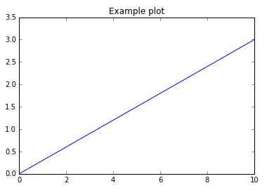

PhraSED-ML is a language and a library that provide a text-based way to read, summarize, and create SED-ML files. A basic phraSED-ML script will look like this:
mod1 = model "sbml_model.xml"
sim1 = simulate uniform(0,10,100)
task1 = run sim1 on mod1
plot time vs S1
>phrasedml-convert.exe phrased.txt
import phrasedml
phrasedmlStr = '''
mod1 = model "sbml_model.xml"
sim1 = simulate uniform(0,10,100)
task1 = run sim1 on mod1
plot time vs S1
'''
sedml = phrasedml.convertString(phrasedmlStr)
import tellurium as te
antimonyStr = '''
model test()
J0: -> S1; 0.3
S1 = 0
end
'''
phrasedmlStr = '''
mod1 = model "test"
sim1 = simulate uniform(0,10,100)
task1 = run sim1 on mod1
plot "Example plot" time vs S1
'''
exp = te.experiment(antimonyStr, phrasedmlStr)
exp.execute()

In general, the phraSED-ML language follows the SED-ML format, and defines models, simulations, tasks (with repeated tasks), and output.
Each has a corresponding SED-ML construct, but many of the internal complications are elided, allowing a much simpler view of a simulation experiment.
SED-ML models are always models that can be found with a URI (typically a relative path name for a file), or as modifications of previously-defined models. In phraSED-ML, they are defined with the syntax:
model_id = model source with changes
source: Sources can currently point to local models or to other models defined in the phraSED-ML.model1 = model "C:/The/path/to/the/model.xml"
model2 = model model1
Note that in SED-ML, the model location can be relative ('model.xml', 'subdir/model.xml', '../model.xml', etc.). In fact, it can be any URI. The phraSED-ML library will be able to discover any filename or relative filename that the system can find, but cannot on its own look up URLs to models on the web. The API functions 'setWorkingDirectory' and 'setReferencedSBML' can help with this: see this document's summary of the API or the full online documentation.
changes: PhraSED-ML supports changing a model element to a single value or a formula. Other possibilities exist in SED-ML, but are not supported at this time.model_id = model source with model_variable_id = formula, model_variable_id2 = formula2, ...You can even define local variables to use inside the formulas.model1 = model "C:/The/path/to/the/model.xml"
model2 = model model1 with S1=0.3, S2 = S1+4
Here, S1 and S2 are model variables, and 'local.x' is a local variable (used simply as 'x' in the formulas).model1 = model "C:/The/path/to/the/model.xml"
model2 = model model1 with local.x = 4, S1 = x^2, S2 = x^4
A SED-ML simulation is a description of the type of experiment one wishes to perform. It only describes the experiment itself, and not the model on which it is to be performed (that's the job of the task).
sim_id = simulate simulation_type
The three types of experiments are steady state ('steadystate'), uniform time course ('uniform'), and one one-step simulations ('onestep').
simulation_type 'steadystate': A simulation to the steady state can be encoded using the 'steadystate' simulation type:
steadystate
example:
sim_steady = simulate steadystate
simulation_type 'uniform': A uniform time course simulation can either be regular ('uniform') or stochastic ('uniform_stochastic') and can have either three or four arguments:uniform(start, end, numberOfPoints)
uniform(initialTime, outputStartTime, end, numberOfPoints)
uniform_stochastic(start, end, numberOfPoints)
uniform_stochastic(initialTime, outputStartTime, end, numberOfPoints)
examples:
sim_uniform1 = simulate uniform(0, 10, 100)
sim_uniform2 = simulate uniform(0, 5, 10, 50)
stoch_uniform1 = simulate uniform_stochastic(0, 10, 100)
stoch_uniform2 = simulate uniform_stochastic(0, 5, 10, 50)
simulation_type 'onestep': A single simulation step of a given time interval can be encoded using the 'onestep' simulation type. This simulation type is typically used for repeated tasks (see below):onestep(time_interval)
examples:
sim_onestep = simulate onestep(0.5)
In SED-ML, specific simulation types and simulation parameters are set using KiSAO terms (http://co.mbine.org/standards/kisao). In phraSED-ML, these terms can be set by keyword (if the term is known) or by number.
To set the KiSAO term of a simulation type, the algorithm keyword is used:
sim_id.algorithm = keyword
sim_id.algorithm = kisao.kisao_value
For example, both of the following lines would set the algorithm type of simulation 'sim1' to the explicit 4th-order Runge-Kutta method, which has a KiSAO ID of kisao:KISAO_0000032:
sim1.algorithm = rk4
sim1.algorithm = kisao.32
The keywords that phraSED-ML understands that can be used to set the algorithm type (and the equivalent KiSAO ID) are:
In addition, one can set various simulation parameters, again using the algorithm keyword:
sim_id.algorithm.keyword = value
sim_id.algorithm.kisao_value = value
For example, both of the following lines would set the absolute tolerance of simulation 'sim1' (which has a KiSAO id of kisao:KISAO_0000211) to 0.04:
sim1.algorithm.absolute_tolerance = 0.04
sim1.algorithm.211 = 0.04
The keywords that phraSED-ML understands that can be used to set algorithm parameters (and the equivalent KiSAO IDs) are:
Do note that little to no error-checking is performed by phraSED-ML for these terms: impossible values or setting an algorithm parameter for an algorithm to which it does not apply will not be caught by phraSED-ML.
A basic task links a model to a simulation, and means 'run this simulation on that model':
task_id = run simulation_id on model_id
example:
task1 = run sim1 on model1
A repeated task allows multiple simulations to be performed, one after the other. Essentially, this is done by specifying loops.
repeatedtask_id = repeat task_id for target_id in repeat_type
repeat_type': This may be an explicit vector or a uniform function (either log or linear):
[val1, val2, ...]: a vector, with explicit listed valuesuniform(start, end, numberOfPoints)logUniform(start, end, numberOfPoints)repeat1 = repeat task1 for S1 in [1, 3, 10]
repeat2 = repeat task1 for S2 in uniform(1, 10, 50)
repeat3 = repeat task1 for S3 in logUniform(1, 10, 20)
repeatedtask_id = repeat [task_id1, task_id2, ...] for target_id in repeat_type
or declaring that other elements change at the same time:
or declaring that the model should be reset between repeats (particularly useful for stochastic tasks):repeatedtask_id = repeat task_id for target_id in repeat_type, target_id = repeat_type, ...
repeatedtask_id = repeat task_id for target_id in repeat_type, target_id = formula, ...
repeatedtask_id = repeat task_id for target_id in repeat_type, reset = true, ...
model_id.variable_id':
repeat1 = repeat task1 for S1 in [1, 3, 5], S2 in uniform(0, 10, 3)
repeat2 = repeat [task1, task2] for X in uniform(0, 10, 100), mod1.S1 = X, mod2.S1 = X+3
repeat3 = repeat task1 for S2 in logUniform(0, 10, 3), reset=true
Plotting will start with plot notation followed by a x variable vs y variables (vs z variables). Each variable will be preceded by the task it is running on, separated with a dot, unless there is only one task/model, in which case the simple variable may be used instead. For simulations with multiple tasks with multiple models, using the notation 'task_id.model_id.variable_id' may be necessary. Functions involving defined elements/attributes for x and y variables are supported..
plot [task.x formula] vs [task.y1 formula], [task.y2 formula], ...
3D plots are also possible:
plot [task.x formula] vs [task.y1 formula] vs [task.z1 formula], ...
Examples:
If all you need is data output, use 'report' instead of plot. Just use commas to delineate what to output:plot task1.time vs task1.S1, task1.S2
plot task2.time vs task2.S1/task2.compartment1, task2.S2/task2.compartment1
plot S1/S2 vs S3/S4
plot task1.time vs task1.S1, task2.time vs task2.S1
plot task1.time vs task1.S1 vs task2.S1
report task1.time, task1.S1, task1.S2
report task2.time, task2.S1/task2.compartment1, task2.S2/task2.compartment1
report S1/S2, S3/S4
report task1.time, task1.S1, task2.time, task2.S1
report task1.time, task1.S1, task2.S1
The API for libphrasedml is relatively simple, and consists of only a dozen functions (eleven for the Python bindings):
convertString(string input)
convertFile(string filename)
These are the main functions in the API. Each takes phraSED-ML or SED-ML input, and outputs SED-ML or phraSED-ML, respectively. If an error occurs, a blank string is returned.
getPhrasedWarnings()
getLastPhrasedError()
getLastPhrasedErrorLine()
When something goes wrong, these functions can be queried to help diagnose what happened.
setWorkingDirectory(string directory)
setReferencedSBML(string URI, string sbmlstring)
clearReferencedSBML()
Both phraSED-ML and SED-ML accept relative file names for referenced models. By default, models will be searched for in the working directory of the program. By using this function, you can set a new working directory in which your models are stored. In some cases, the SBML file may not be retrievable through normal means, but a copy of the file will exist in memory. In those cases, 'setReferencedSBML' can be used to map a URI to a copy of the SBML document itself, and 'clearReferencedSBML' can be used to remove that information again.
getLastPhraSEDML()
getLastSEDML()
These are mostly testing functions for round-tripping phraSED-ML or SED-ML. If you use the 'convert' functions, above, these functions will give you the SED-ML or phraSED-ML versions of the input.
addDotXMLToModelSources()
In some contexts (like when using Antimony and phraSED-ML in concert in Tellurium) a user may wish to declare a model just by its name, not its filename. When constructing the actual SED-ML, however, actual files must be constructed and pointed to. Using this function adds ".xml" to any filename that does not already have ".xml" or ".sbml" in it. The new name is not checked; it is assumed that the files will be created and pointed to appropriately.
freeAllPhrased()
This function will free all the strings (char*'s) that the API has handed out at once. This can only safely be called if the user has not freed any of them by hand. It is not available in the Python API, which handles all memory management separately.
phrasedmlStr = '''
model1 = model "BIOMD0000000021.xml"
model2 = model model1 with V_mT = 0.28, V_dT = 4.8
simulation1 = simulate uniform(0, 380, 1000)
task1 = run simulation1 on model1
task2 = run simulation1 on model2
plot task1.time vs task1.Mt, task2.Mt
plot task1.Cn vs task1.Mt, task2.Cn vs task2.Mt
'''
Here, the Le Loup model (Biomodels model 21) is read in as 'model1', and a copy is made with new initial values for the parameters V_mT and V_dT. The same simulation is run on both, and results for each compared with the other in a series of plots.
phrasedmlStr = '''
model1 = model "oscli.xml"
stepper = simulate onestep(0.1)
task0 = run stepper on model1
task1 = repeat task0 for local.x in uniform(0, 10, 100), J0_v0 = piecewise(8, x<4, 0.1, 4<=x<6, 8)
plot task1.time vs task1.S1, task1.S2, task1.J0_v0
'''
This experiment shows how one might vary a parameter during the course of a run: each time the simulation takes a single time step, a local variable 'x' is incremented. In the meantime, the model variable J0_v0 is set to 8 while x is less than 4, then is reset to 0.1 while x is between 4 and 6, and finally is reset to 8 again after that (until x reaches 10, and the repeated task ends). There is no 'with reset' for this simulation, so this is effectively a single timecourse.
phrasedmlStr = '''
model1 = model "borisejb.xml"
timecourse1 = simulate uniform_stochastic(0, 4000, 1000)
timecourse1.algorithm.seed = 1003
task0 = run timecourse1 on model1
task1 = repeat task0 for local.x in uniform(0, 10, 10), reset=true
plot task1.time vs task1.MAPK, task1.MAPK_P, task1.MAPK_PP, task1.MKK, task1.MKK_P, task1.MKKK, task1.MKKK_P
'''
This experiment repeats a stochastic simulation 10 times, and plots the results. Because 'with reset' is used, these are repeated timecourse simulations with identical starting conditions, but stochastic runs. The seed for the stochastic simulation is set for the first run, so that the exact same run could be produced again on the same computer in the same situation. However, the seed would not be reset for each run of the algorithm; this would not produce useful results.
phrasedmlStr = '''
model1 = model "http://sourceforge.net/p/libsedml/code/119/tree/trunk/Samples/models/oscli.xml?format=raw"
timecourse1 = simulate uniform(0, 20, 1000)
task0 = run timecourse1 on model1
task1 = repeat task0 for J0_v0 in [8, 4, 0.4], reset=true
plot task1.time vs task1.S1, task1.S2
'''
In the above experiment, the model variable 'J0_v0' is set to 8, then 4, and then 0.4, for the three times the timecourse is repeated. All three sets of results are then plotted.
phrasedmlStr = '''
model_3 = model "borisejb.xml"
sim_repeat = simulate steadystate
task_1 = run sim_repeat on model_3
repeatedtask_1 = repeat task_1 for J1_KK2 in [1, 5, 10, 50, 60, 70, 80, 90, 100]
repeatedtask_2 = repeat repeatedtask_1 for J4_KK5 in uniform(1, 40, 100)
plot repeatedtask_2.J4_KK5 vs repeatedtask_2.MKK, repeatedtask_2.MKK_P
'''
In this experiment, model variable J1_KK2 is set to 9 different values for each of 100 values of J4_KK5, evenly spaced between 1 and 40.